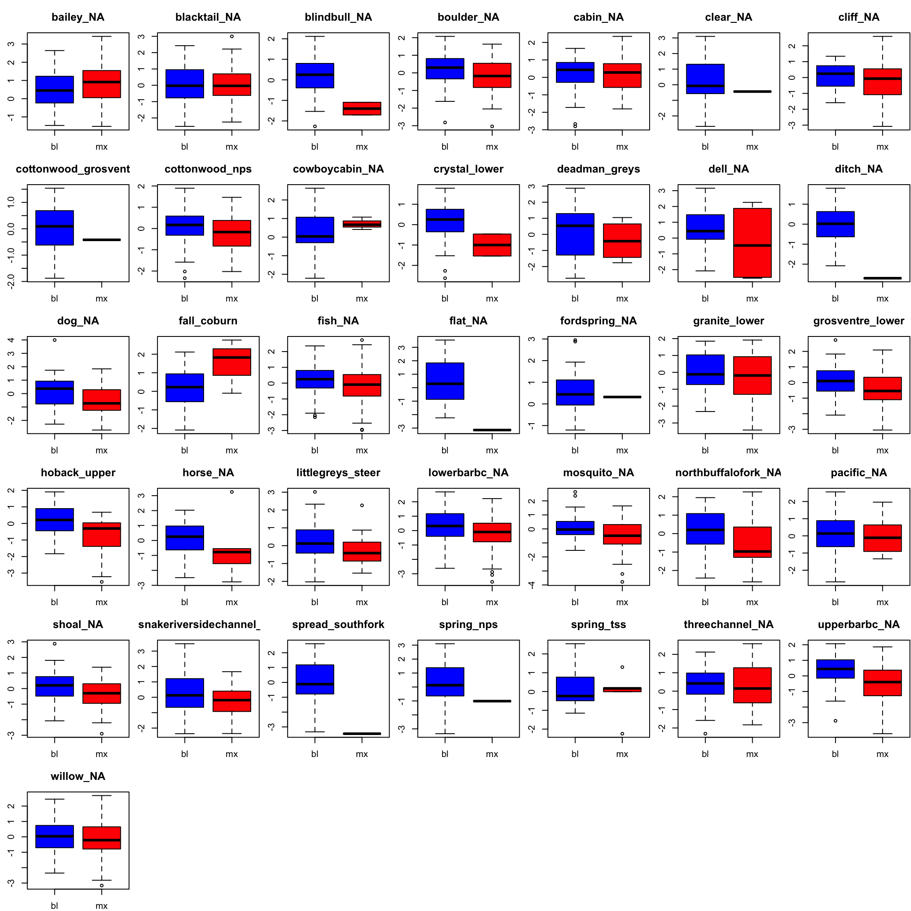
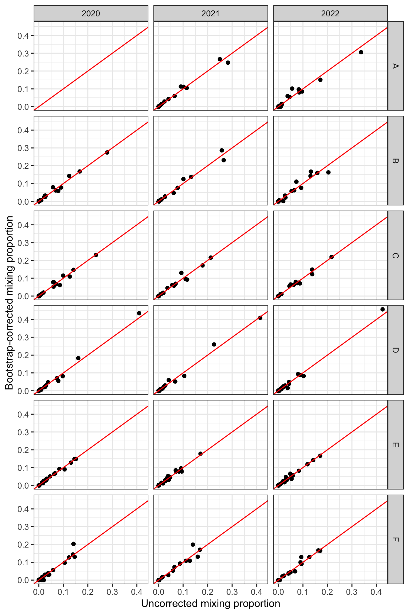
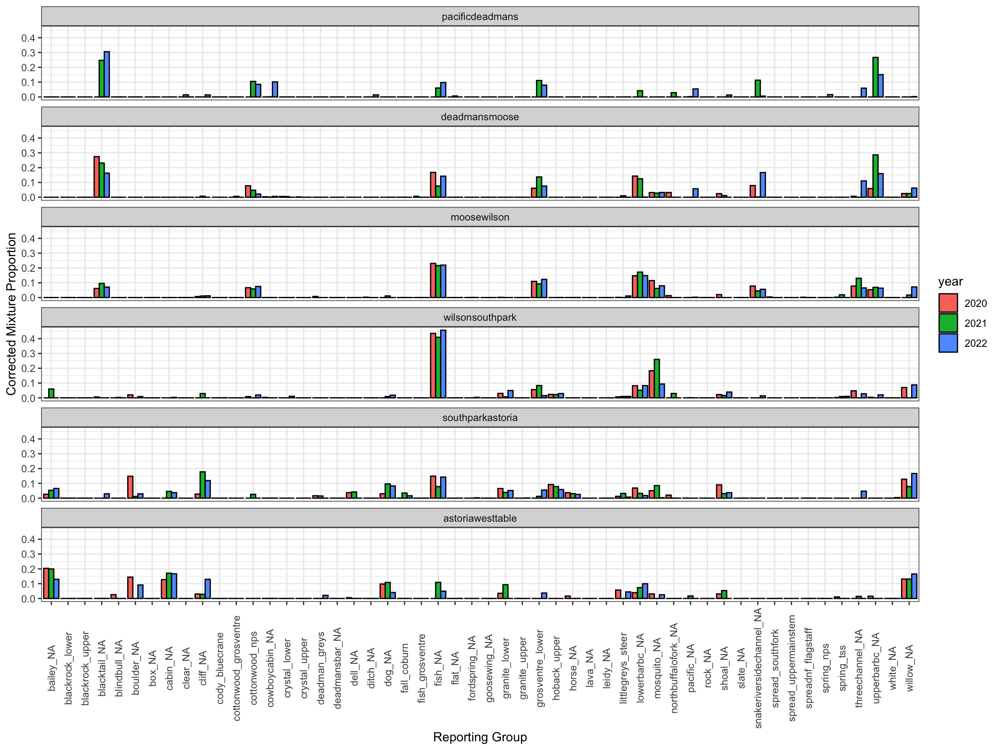

Purpose: Run genetic stock identification analysis and generate various output files.
5.1 Data
Read in formatted genotype data, see BaselineDataTesting.R
Code
# formatted reference and mixture genotypesref_input<-read_csv("/Users/jeffbaldock/Library/CloudStorage/GoogleDrive-jbaldock@uwyo.edu/Shared drives/wyo-coop-baldock/UWyoming/Snake River Cutthroat/Analyses/Snake River GSI Quarto/Baseline Testing/UpperSnakeRiver_GTseq_InputData_NoSibs_clean_baseline.csv")mix_input<-read_csv("/Users/jeffbaldock/Library/CloudStorage/GoogleDrive-jbaldock@uwyo.edu/Shared drives/wyo-coop-baldock/UWyoming/Snake River Cutthroat/Analyses/Snake River GSI Quarto/Baseline Testing/UpperSnakeRiver_GTseq_InputData_NoSibs_clean_mixture.csv")%>%filter(collection!="snake_jldcattlemens")ref_input<-ref_input%>%mutate_if(is.double, as.integer)# make sure everything is an intergermix_input<-mix_input%>%mutate_if(is.double, as.integer)# make sure everything is an interger
Get metadata
Code
# get metadataids<-read_csv("/Users/jeffbaldock/Library/CloudStorage/GoogleDrive-jbaldock@uwyo.edu/Shared drives/wyo-coop-baldock/UWyoming/Snake River Cutthroat/Analyses/Snake River GSI Quarto/LabFieldIDs.csv")data<-read_csv("/Users/jeffbaldock/Library/CloudStorage/GoogleDrive-jbaldock@uwyo.edu/Shared drives/wyo-coop-baldock/UWyoming/Snake River Cutthroat/Analyses/Snake River GSI Quarto/Snake_GSI_field data_2020-2022_GenOnly_DropNoDrop_090823edit.csv")metadata<-left_join(ids, data)%>%select(indiv, CORRgenID, year, site, TL.mm, TL.in, FL.mm, weight.g, weight.lbs, collection.type, sizecat)%>%filter(collection.type=="mixture", site!="snake_jldcattlemens")metadata[duplicated(metadata$indiv),]# check for duplicates
self_test_exam<-read_csv("/Users/jeffbaldock/Library/CloudStorage/GoogleDrive-jbaldock@uwyo.edu/Shared drives/wyo-coop-baldock/UWyoming/Snake River Cutthroat/Analyses/Snake River GSI Quarto/Baseline Testing/Self Assignment/self_assign_results_individuals.csv")
Get groundwater metrics, GPS locations, and repunit-section distances for plotting
Code
# groundwater metricsgwmet<-read_csv("/Users/jeffbaldock/Library/CloudStorage/GoogleDrive-jbaldock@uwyo.edu/Shared drives/wyo-coop-baldock/UWyoming/Snake River Cutthroat/Analyses/Snake River GSI Quarto/Landscape Covariates/Groundwater/GroundwaterMetrics_raw_RepUnits.csv")%>%rename(repunit =site)%>%mutate(logarea =log(areasqkm), loggwi =log(gwi_iew05km))%>%mutate(z_logarea =as.numeric(scale(logarea)), z_loggwi =as.numeric(scale(loggwi)))%>%arrange(repunit)gps<-read_csv("/Users/jeffbaldock/Library/CloudStorage/GoogleDrive-jbaldock@uwyo.edu/Shared drives/wyo-coop-baldock/UWyoming/Snake River Cutthroat/Analyses/Snake River GSI Quarto/Landscape Covariates/Location Data/RepUnit_LatLong.csv")dist<-read_csv("/Users/jeffbaldock/Library/CloudStorage/GoogleDrive-jbaldock@uwyo.edu/Shared drives/wyo-coop-baldock/UWyoming/Snake River Cutthroat/Analyses/Snake River GSI Quarto/Landscape Covariates/Flowline Distance/SnakeRiverSections_RepUnits_FlowlineDistance.csv")
Run GSI with collections specific to sections and years. Mthod “PB” provides bootstrapped corrected mixing proportions.
Code
gsi_sectyear<-infer_mixture(reference =ref_input, mixture =mix_input_yr, gen_start_col =5, method ="PB")saveRDS(gsi_sectyear, "/Users/jeffbaldock/Library/CloudStorage/GoogleDrive-jbaldock@uwyo.edu/Shared drives/wyo-coop-baldock/UWyoming/Snake River Cutthroat/Analyses/Snake River GSI Quarto/GSI Analysis/By Section and Year/UpperSnake_GSI_SectionYear_output.RDS")write_csv(gsi_sectyear$bootstrapped_proportions, "/Users/jeffbaldock/Library/CloudStorage/GoogleDrive-jbaldock@uwyo.edu/Shared drives/wyo-coop-baldock/UWyoming/Snake River Cutthroat/Analyses/Snake River GSI Quarto/GSI Analysis/By Section and Year/UpperSnake_GSI_SectionYear_BootstrappedProportions.csv")gsi_sectyear<-readRDS("/Users/jeffbaldock/Library/CloudStorage/GoogleDrive-jbaldock@uwyo.edu/Shared drives/wyo-coop-baldock/UWyoming/Snake River Cutthroat/Analyses/Snake River GSI Quarto/GSI Analysis/By Section and Year/UpperSnake_GSI_SectionYear_output.RDS")
5.2.1 GSI Diagnostics
5.2.1.1 MAP
Get the maximum-a-posteriori population for each individual. Do mainstem individuals assign to a source population (reporting group) with high probability? Do certain reporting groups have many individuals that assign with low certainty? (if so, may suggest missing reporting groups from baseline)
Plot density of observed z-scores (blue) against expected (black)…if all contributing pops are represented in the baseline, distributions should be similar.
Test for differences between observed and random normal distributions using a Kolmogorov-Smirnov test. p << 0.05 indicates there are problematic individuals (distributions are not the same).
Following Bowersox, Hargrove, et al 2023 (NAJFM), individual likely originated from an unsampled pop if +/- 2 SDs from the mean z-score. Find problematic individuals
Other papers compare z-scores from observed mixture data (red) to z-scores generated from the self-assignment tests (blue):
Code
par(mfrow =c(6,7), mar =c(2,2.5,3,0.1))sites<-sort(unique(map_rows$repunit))for(iin1:length(sites)){mx<-map_rows%>%filter(repunit==sites[i])bl<-self_test_exam%>%filter(repunit==sites[i])ztib<-tibble(type =c(rep("mx", times =dim(mx)[1]), rep("bl", times =dim(bl)[1])), z =c(mx$z_score, bl$z_score))boxplot(z~type, ztib, col =c("blue", "red"), main =sites[i])}

5.2.2 BS mixing proportions
Inspect bootstrap-corrected mixing proportions, because from self-assignment tests and mixture simulations, we know raw mixing proportions will be somewhat biased.
Summarize raw and bootstrap corrected mixing proportions by reporting group, calculate mean residual for each collection.
Calculate Pearson’s r correlation coefficient between raw and bootstrap-corrected mixing proportions:
Code
tt<-tt%>%mutate(sectionID =recode(section, "pacificdeadmans"="A","deadmansmoose"="B","moosewilson"="C","wilsonsouthpark"="D","southparkastoria"="E","astoriawesttable"="F"), year =as.numeric(year))tt2<-add_row(tt, year =2020, sectionID ="A")cor.test(tt2$pi, tt2$bs_corrected_repunit_ppn)
Pearson's product-moment correlation
data: tt2$pi and tt2$bs_corrected_repunit_ppn
t = 209.79, df = 882, p-value < 2.2e-16
alternative hypothesis: true correlation is not equal to 0
95 percent confidence interval:
0.9887422 0.9913441
sample estimates:
cor
0.9901281
Plot raw vs bootstrap-corrected mixing proportions. Red line = 1:1.
Code
tt2%>%ggplot()+geom_point(aes(x =pi, y =bs_corrected_repunit_ppn))+geom_abline(intercept =0, slope =1, col ="red")+facet_grid(factor(sectionID)~year)+xlab("Uncorrected mixing proportion")+ylab("Bootstrap-corrected mixing proportion")+theme_bw()

Plot bootstrap-corrected mixing proportions by reporting unit, Snake River section, and year.
Code
tt%>%add_row(repunit =unique(tt$repunit), bs_corrected_repunit_ppn =rep(0, 52), section =rep("pacificdeadmans", 52), year =rep(2020, 52))%>%mutate(year =as.factor(year))%>%ggplot()+geom_bar(aes(x =repunit, y =bs_corrected_repunit_ppn, fill =year), stat ="identity", position ="dodge", color ="black")+facet_wrap(~factor(section, levels =c("pacificdeadmans", "deadmansmoose", "moosewilson", "wilsonsouthpark", "southparkastoria", "astoriawesttable")), nrow =6)+xlab("Reporting Group")+ylab("Corrected Mixture Proportion")+theme_bw()+theme_bw()+theme(axis.text.x =element_text(angle =90, vjust =0.5))

Produce the same plot as above, except bar height represents mean bootstrap-corrected mixture proportion and error bars represent minimum and maximum (over 3 years of sampling).
Use Kolmogorov-Smirnof tests to test for differences in the distribution of “dispersal distances” among years. No differences.
Note that the distribution of approx. dispersal distance is robust to choice of maximum assignment probability. Min, max, and median dispersal distance is very similar for fish with PofZ > 0.7 and for those with PofZ > 0.95.
Code
ddd<-map_rows%>%mutate(section =substr(mixture_collection, 1, nchar(mixture_collection)-5), year =as.numeric(substr(mixture_collection, nchar(mixture_collection)-3, nchar(mixture_collection))))%>%filter(PofZ>=0.7)%>%left_join(dist)# pairwise KS tests, do the distributions of distances differ among years?ks.test(unlist(ddd%>%filter(year==2020)%>%select(distkm)), unlist(ddd%>%filter(year==2021)%>%select(distkm)))
Asymptotic two-sample Kolmogorov-Smirnov test
data: unlist(ddd %>% filter(year == 2020) %>% select(distkm)) and unlist(ddd %>% filter(year == 2021) %>% select(distkm))
D = 0.08159, p-value = 0.1265
alternative hypothesis: two-sided
Run GSI with collections specific to sections, but agnostic to years. Mthod “PB” provides bootstrapped corrected mixing proportions.
Code
gsi_section<-infer_mixture(reference =ref_input, mixture =mix_input, gen_start_col =5, method ="PB")saveRDS(gsi_section, "/Users/jeffbaldock/Library/CloudStorage/GoogleDrive-jbaldock@uwyo.edu/Shared drives/wyo-coop-baldock/UWyoming/Snake River Cutthroat/Analyses/Snake River GSI Quarto/GSI Analysis/By Section/UpperSnake_GSI_Section_output.RDS")write_csv(gsi_section$bootstrapped_proportions, "/Users/jeffbaldock/Library/CloudStorage/GoogleDrive-jbaldock@uwyo.edu/Shared drives/wyo-coop-baldock/UWyoming/Snake River Cutthroat/Analyses/Snake River GSI Quarto/GSI Analysis/By Section/UpperSnake_GSI_SectionYear_BootstrappedProportions.csv")gsi_section<-readRDS("/Users/jeffbaldock/Library/CloudStorage/GoogleDrive-jbaldock@uwyo.edu/Shared drives/wyo-coop-baldock/UWyoming/Snake River Cutthroat/Analyses/Snake River GSI Quarto/GSI Analysis/By Section/UpperSnake_GSI_Section_output.RDS")
5.3.1 BS mixing proportions
Inspect bootstrap-corrected mixing proportions, because from self-assignment tests and mixture simulations, we know raw mixing proportions will be somewhat biased.
Summarize raw and bootstrap corrected mixing proportions by reporting group, calculate mean residual for each collection.